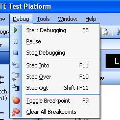
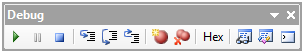
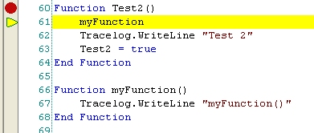
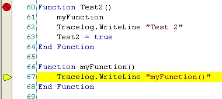
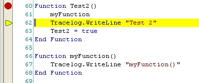
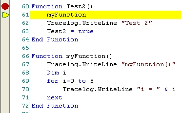
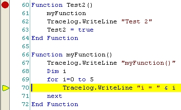
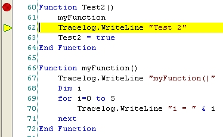

Debugger
Commands
The
debugger controls can be accessed from either the debug menu or the debug
toolbar. If the debug toolbar is not visible, right-click anywhere at the
top of the screen where the menus and toolbars are located to display the
toolbars menu and select Debug.
|
|
Select Debug from the toolbars
menu to show the Debug toolbar. |

|
 |
The Debug menu. |
|
 |
The Debug toolbar. |
Click on the following links for a detailed description of the debugger
commands.
|
|
Starts
the test in debug mode. If any breakpoints are set, the test will break,
or pause, at each breakpoint until the user resumes the test by clicking this
button again. The shortcut key is F5.
|
|
Pauses the test. To
resume the test, click the Start the Debugger button.
|
|
Stops
execution of the test program if it was run in debug mode. If the test
program is in a break state, the program will stop immediately. If the program
is running, it will not stop until the end of the current node unless the
VBScript test script checks for Sequencer.Terminating
= true.
|
|
Step into
the next line of code. In other words, if the next line of code is a
procedure call, the debugger will break at the first line of that procedure's
code as long as it is defined in either the main test script file or the globals file. The debugger will not step into a
procedure defined inside an import file. If the next line of code is not
a procedure call, this command behaves like Step Over. The shortcut key
is F11.
Example:
The
program shown below is paused in a break state on line 61 which is a call to
the function myFunction(). If we click Step Into, the program will break on
line 67 which is the first line of myFunction() and the next executable line of code.
|
Before Step Into: |
After Step Into: |
|
 |
 |
|
|
Step over
the next line of code. In other words, if the next line of code is a
procedure call, the debugger will not break at the first line of the
procedure's code. Instead it will execute the code and break at the line
following the procedure call. The shortcut key is F10.
Example:
The
program shown below is paused in a break state on line 61 which is a call to
the function myFunction(). If we click Step Over, the program will not break
on the next line that is executed, line 67, because it is contained in another
function. Instead, the code in myFunction() will be executed and the program will break on line 62.
|
Before Step Over: |
After Step Over: |
|
|
 |
|
|
Step out
of the current procedure. When stepping through a procedure that was
previously stepped into, click Step Out Of to stop stepping through the
procedure and break on the next line in the calling procedure. The
shortcut key is Shift+F11.
Example:
The
program shown below paused in a break state on line 61 which is a call to the
function myFunction(). We stepped into myFunction,
but after stepping through the loop a couple times we decided it was not
necessary to step through the remaining iterations. However, we do want
to continue stepping through the calling function. Clicking Step Out Of
will cause the program to finish executing myFunction() without
breaking and then break at line 62 in Test2().
|
Before step into: |
After step into: |
After step out of: |
|
 |
 |
 |
|
|
Toggles a
breakpoint on either a node in the Test Sequence View or a line in the test
script, depending on which one has input focus when this button is
clicked. The shortcut key is F9. A breakpoint in the test script
can also be set by clicking in the margin to the left of the line number in
either the Script View or Globals View. In the
test script, a breakpoint can only be set on an executable line of code.
It cannot be set on a line that contains only whitespace or a comment.
|
|
Deletes
all breakpoints from the test program. This includes both script
breakpoints and tree node breakpoints.
|
|
Hex |
Toggles
how Integer data types are displayed in the watch window, either as HEX values
or Decimal values.
|
|
Toggles
the visibility of the watch window.
|
|
Toggles
the visibility of the locals watch window.
|
|
Toggles
the visibility of the command window.
See Also
Debugger Overview | Watch Window | Locals Watch Window | Command Window
EADS
North America Test and Services
Last updated on 10/29/10 by S. Lao